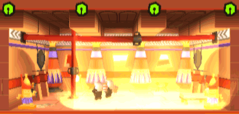

17 |
La jauge de respect |
 |
|
La jauge de respect correspond au niveau de respect que les humains ressentent pour vous. Un dieu respecté est un dieu influent et puissant.
La jauge de respect est divisée en quatre paliers qui déterminent les pouvoirs utilisables et la puissance de ces pouvoirs. Chaque palier est divisé en quatre tranches, remplies par les points de respect générés par les humains. Pour bénéficier de toute la puissance de vos pouvoirs, vous devrez conserver une jauge de respect bien remplie, en faisant en sorte que les humains soient contents.
Chaque pouvoir a un niveau d’activation qui correspond à un palier et une tranche de la jauge de respect. Chaque pouvoir a un coût. A chaque utilisation d'un pouvoir, ce coût est retiré de la jauge de respect. Le coût influe sur la largeur de la zone d'effet du pouvoir : Une tranche = un quart de l'étage.
Deux tranches = la moitié de l'étage.
Trois tranches = trois quarts de l'étage.  Quatre tranches = tout l'étage.
Il est possible d'utiliser un pouvoir à un palier supérieur à celui d'activation. Dans ce cas, le pouvoir gagne en puissance. |

 |
 |
 |